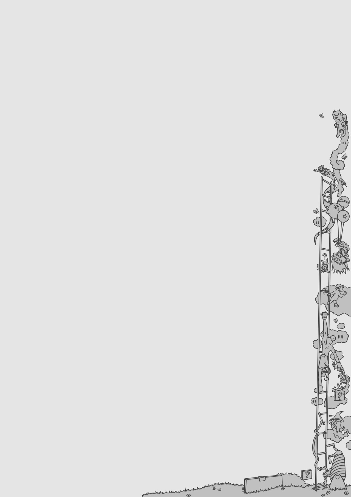

Rokas Kasperavicius
Web Developer


Personal Information
-
Name: Rokas Kasperavicius
-
Email: kasperavicius.rokas@gmail.com
-
Living Location: Lithuania, Kaunas
-
Phone Number: +370 680 22475
Work Experience/Education
-
Gymnasium: Kauno "Saules" gymnasium
-
University: Kaunas Technology University
-
Intern for 2 months at Adapt LT Kaunas
-
3 years of working at Microsoft Lithuania
Social Media
-
Facebook: Rokas Kasperavicius
-
Twitter: Rokas192
-
LinkedIn: Rokas Kasperavicius
-
Instagram: kasperavicius_rokas